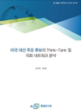

보고서 게시판 B - View


대북정책
- 
-
Inter-Korean Relations and the Unification Process..
Jong-Chul Park and Joseph Harte
2016-03-25 / 404 p.
This year marks the 70th anniversary of Korea’s liberation from Japanese occupation. At the same ti ...
총:
500
건 | 페이지수: 1/50| 번호 | 서명 | 발행일 | 저자 | 원문 | 조회 |
|---|---|---|---|---|---|
| 3228 | 신임 간부진 임명식 | 2016-06-28 | 박주화 | 357 | |
| 3227 | [제8회 KINU 서초포럼] 참석 | 2016-06-24 | 박영자 | 705 | |
| 3226 | [미의회 중국이윈회 대표단 방원워크숍] 참석 | 2016-06-21 | 정성윤 | 468 | |
| 3225 | 신임 간부진 임명식 | 2016-06-17 | 한승수 | 257 | |
| 3224 | 신임 간부진 임명식 | 2016-06-15 | 박주화 | 169 | |
| 3223 | 해외언론인 방원인터뷰 | 2016-06-11 | 박영자 | 246 | |
| 3222 | [북한인권 실태 및 정책회의] 참석 | 2016-06-07 | 정성윤 | 102 | |
| 3221 | [KAIST NERIEC 방원워크숍] 참석 | 2016-06-02 | 한승수 | 237 | |
| 3220 | [통일정책연구협의회 운영위원회 회의] 참석 | 2016-05-27 | 박주화 | 569 | |
| 3219 | [통일정책연구협의회 의장단회의] 참석 | 2016-05-21 | 박영자 | 457 |